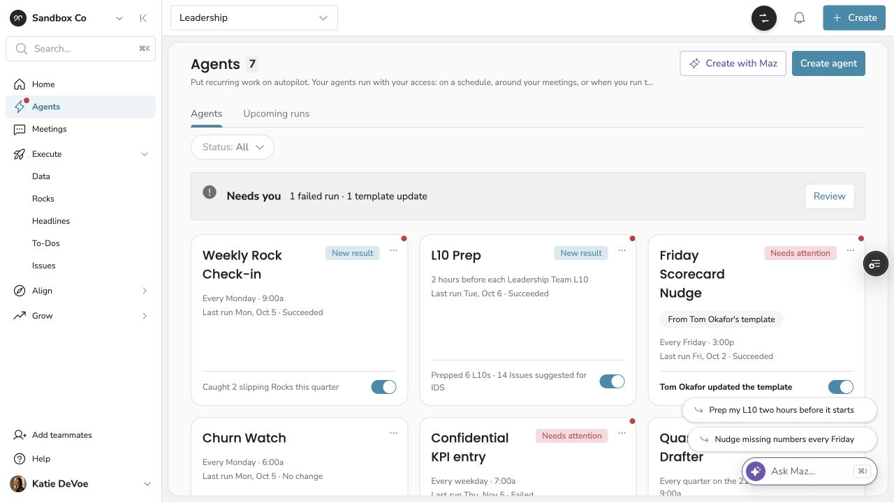

01 / Ninety · AI agents · Alpha
Making recurring work easier to delegate.
End-to-end UX and UI for AI agents. Clear instructions, understandable access, and a simpler way to get started.

Removed tool selection through design and engineering collaboration.
View case study ↗